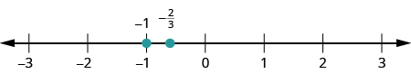
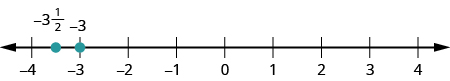
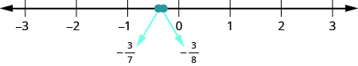
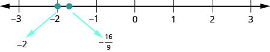

ভগ্নাংশ ও মিশ্র ভগ্নাংশকে ছোটো-বড়োর ক্রমে সাজানো
উৎস-অনুগত উপবিভাগ · m81285-fs-id1390550। সম্পূর্ণ বইয়ের অনুবাদ এখনও চলছে। গাণিতিক চিহ্ন, সংখ্যা ও মূল কাঠামো অক্ষুণ্ণ; প্রযোজ্য ক্ষেত্রে সূত্রের শব্দলেবেল বাংলায় অনূদিত। মূল ছবির ভিতরের ইংরেজি লেবেলের অর্থ বাংলা বিবরণে আছে। স্বাধীন শিক্ষক ও ভাষা-পর্যালোচনা বাকি। অন্য উপবিভাগের উৎস-লিঙ্কে ইন্টারনেট প্রয়োজন।
ভগ্নাংশ ও মিশ্র ভগ্নাংশকে ছোটো-বড়োর ক্রমে সাজানো
অসমতা-চিহ্নের সাহায্যে ভগ্নাংশগুলিকে ছোটো-বড়োর ক্রমে সাজানো যায়। মনে রেখো, -এর অর্থ, সংখ্যারেখায় রয়েছে -এর ডান দিকে। সংখ্যারেখায় বাঁ থেকে ডান দিকে গেলে মান বাড়ে।
অনুশীলন · এই প্রশ্নের লিঙ্ক
- ⓐ
- ⓑ
- ⓒ
- ⓓ
সমাধান
ⓐ

সংখ্যারেখায় −3 থেকে 3 পর্যন্ত পূর্ণসংখ্যাগুলি চিহ্নিত। −1 বিন্দুটি দেখানো আছে। −1 ও 0-এর মাঝে −2/3 বিন্দুটি দেখানো আছে; সেটি −1-এর ডান দিকে। তাই −2/3 বড়ো।
ⓑ

সংখ্যারেখায় −4 থেকে 4 পর্যন্ত পূর্ণসংখ্যাগুলি চিহ্নিত। −3 বিন্দুটি দেখানো আছে। −4 ও −3-এর মাঝে ঋণাত্মক মিশ্র ভগ্নাংশ −3 1/2, অর্থাৎ −7/2, দেখানো আছে। এটি −3-এর বাঁ দিকে।
ⓒ

সংখ্যারেখায় −3 থেকে 3 পর্যন্ত পূর্ণসংখ্যাগুলি চিহ্নিত। −1 ও 0-এর মাঝে −3/7 এবং −3/8 বিন্দুদুটি দেখানো আছে। −3/7 বিন্দুটি −3/8-এর বাঁ দিকে; তাই −3/7 ছোটো।
ⓓ

সংখ্যারেখায় −3 থেকে 3 পর্যন্ত পূর্ণসংখ্যাগুলি চিহ্নিত। −2 বিন্দুটি দেখানো আছে। −2 ও −1-এর মাঝে −16/9 বিন্দুটি দেখানো আছে। −2 বিন্দুটি −16/9-এর বাঁ দিকে; তাই −2 ছোটো।